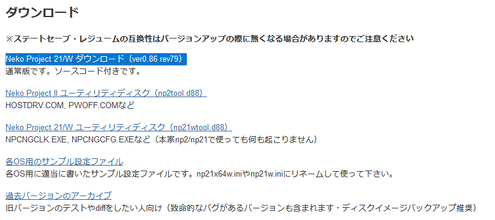
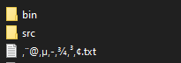
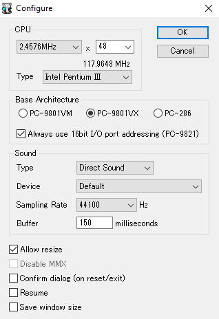
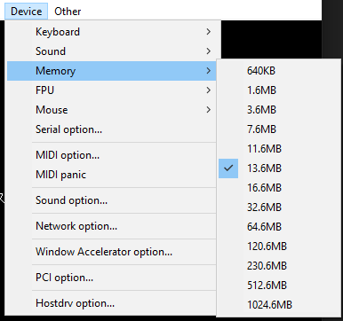
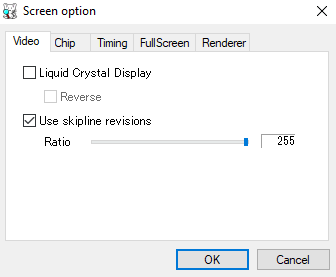
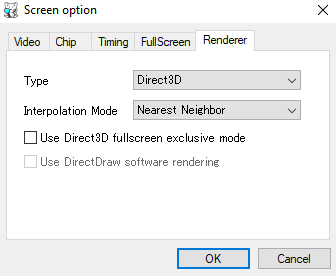
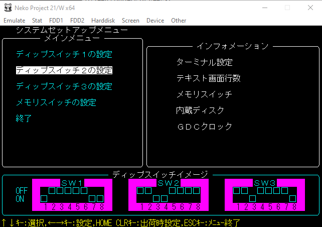
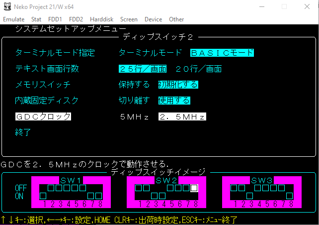
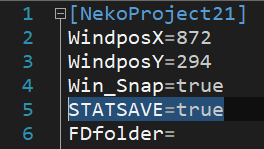

To download the emulator go to this site. If you can read Japanese, good for you. If you can't, please continue to read. To get the latest version, click on the first link under the header ダウンロード. 
After downloading the archive, extract it to wherever you like. The archive comes with the source code too, located in /src folder, whereas the exe files are located in the /bin folder. 
If you are running on a 32-bit Windows OS, run np21w.exe. If it is 64-bit, run np21x64w.exe.
Double click on the right executable, ignore what it's doing on the screen. Go to the Emulate tab, select Configure and change the settings as below:  Note that if your computer is weak you can replace the number 48 with 32. Hit OK. Next, go to the Device tab, set the Memory to at least 13.6MB.  Then, go to the Screen tab, go to Screen options.... Under the Video tab, enable Use skipline revisions and set the ration to the maximum value (255).  Under the Renderer tab in the same window, select the Type to use Direct3D.  And hit OK.
To enter the BIOS mode, you need to hold the End key while selecting Reset under the Emulate tab. Press the down arrow key and go to the second option and press Enter. 
Next, press the down key until you reach GDCクロック. Press the right arrow key and the 2.5MHz should be highlighted (if it's not highlighted before). Go down to 終了 and hit Enter. Do this once again and you should exit the BIOS mode. 
To enable savestate, open the .ini file that corresponds to the executable you run. If it's not there, make sure you have closed the emulator first. Copy and paste this line under the first line of the file:
STATSAVE=true
It should look similar to the image below:

Under the Harddisk tab, select any of the IDE # options and click Open.... Select the game to want to run and reset the emulator. Enjoy!